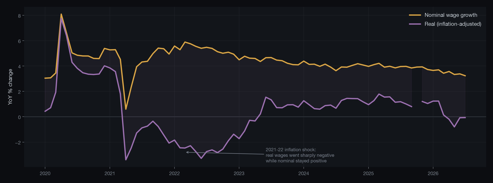
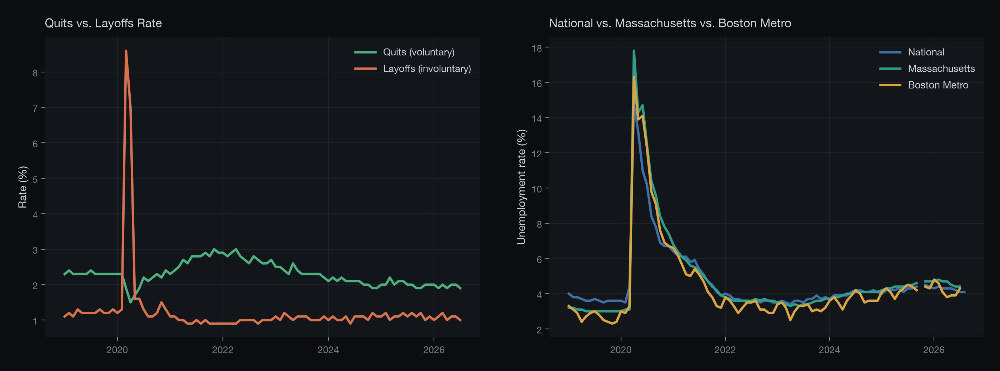
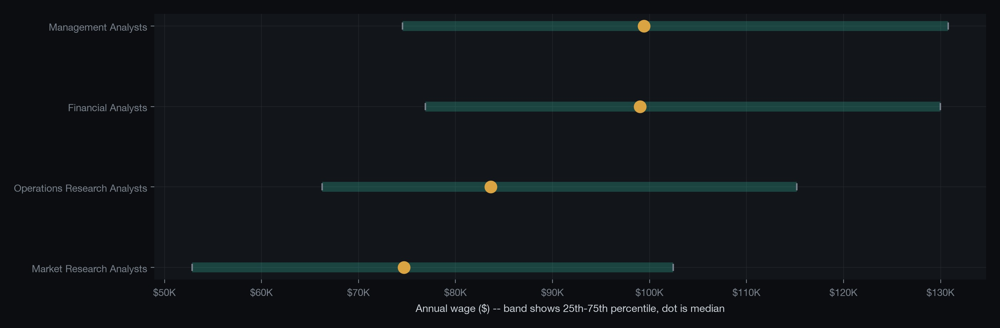

A self-built data pipeline pulling 15 government labor-market series and live federal job postings, purpose-built to answer one question the headline numbers won't: is the analyst/BI/intelligence job market actually as bad as it feels — nationally, in Massachusetts, and in Boston specifically?

Situation
Every headline labor-market number — unemployment steady, wages up 3% — gets read as a single verdict on "the job market." For anyone actually in that market, the real question is narrower and more personal: what's happening in my occupation, my region, right now — not the national average six weeks late.
Complication
The standard numbers hide exactly the signal that matters. Nominal wage growth ignores inflation. Sector-wide aggregates ("Professional and Business Services") bury 30%+ wage spread between the occupations inside them. National figures smooth over real regional divergence. And official job-openings statistics are a lagging government estimate, not a read on what's actually being posted this week.
Question
Could a fully free, self-hosted pipeline — no paid BI license, no cloud spend — pull enough government and live-postings data to surface what the aggregate numbers miss, specifically for the Boston-area analyst/BI/intelligence market?
Answer
Built as a three-layer pipeline, entirely on free and open-source tools:

Quits and layoffs are both "separations" in the headline number but mean opposite things. Massachusetts and Boston metro both run slightly hotter than the national rate — a real, modest local gap the national figure hides.

Occupational Employment and Wage Statistics by detailed SOC code, not sector average — Financial and Management Analysts cluster near $99K median, roughly 30% above Market Research Analysts, despite sharing the same sector bucket.
Built with